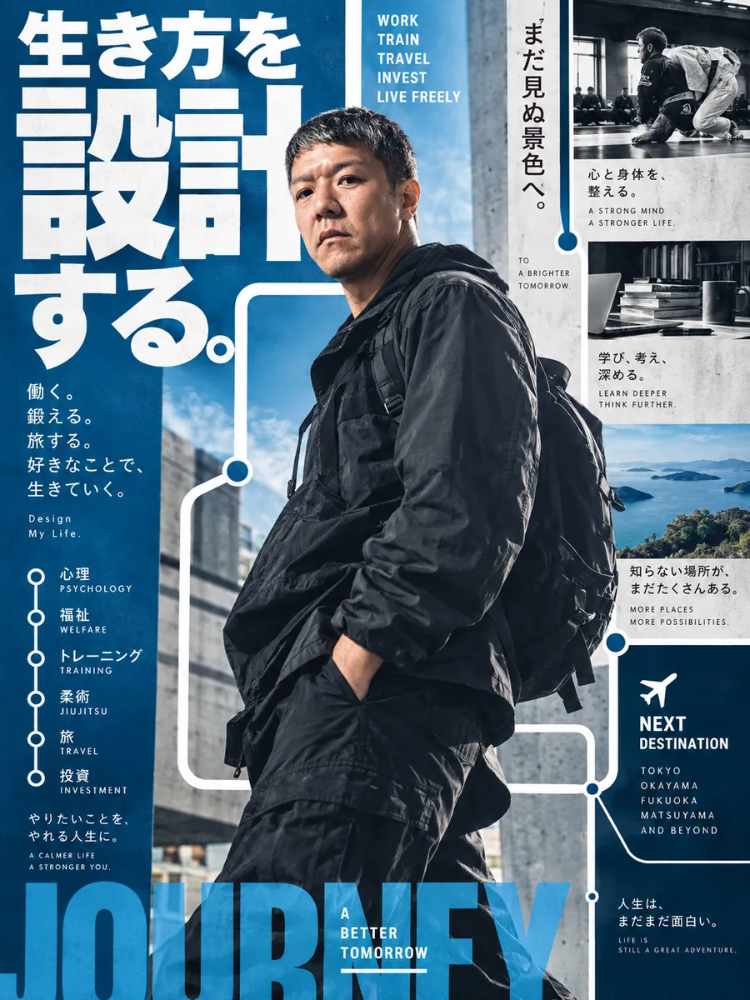
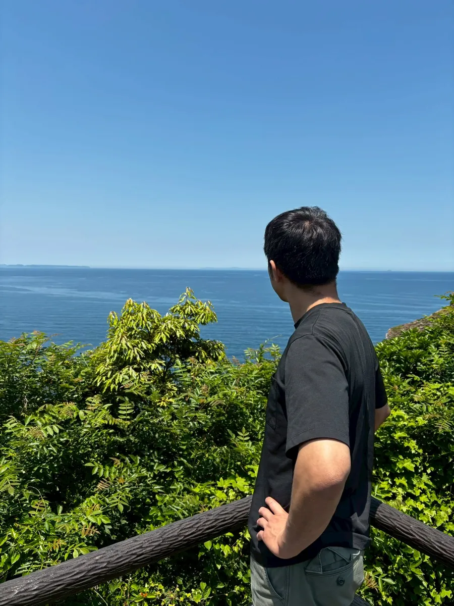
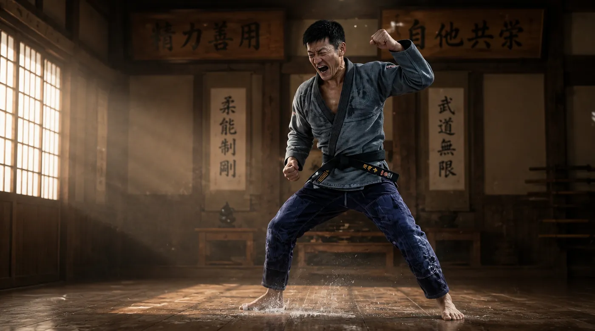

PSYCHOLOGY
- 公認心理師
心理職の国家資格
PERSONAL PROFILE / SINCE 1983
PsychologistBJJ Black BeltAI UserMinimalistIndex Investor
専門性を持ちながら、
できるだけ自由に生きる。
Psychology. AI. BJJ. Money. Freedom.

ひとつの肩書きでは説明できない。だから、全体を見てほしい。

心理・福祉の専門職として働きながら、
AI・格闘技・資産形成・ミニマルな暮らしを組み合わせて、
自分の自由時間を増やそうとしている人です。
障害福祉の分野で約15年。公認心理師として、心理検査やアセスメントを「検査して終わり」にせず、支援へつなげることを大切にしています。
仕事の外では、ブラジリアン柔術と柔道の黒帯を持ち、柔術のクラス指導もしています。お金はインデックス投資で長期運用し、生活は固定費を小さく保つ。そのすべてを、生成AIで整理・可視化・自動化しています。
NOT A PERFECT PERSON
心理 × 福祉 × 金融 × 格闘技。異なる4つの領域に、それぞれ足場がある。
PSYCHOLOGY
心理職の国家資格
WELFARE
福祉系国家資格 ×3
FINANCE
ファイナンシャル・プランニング技能士
MARTIAL ARTS
柔術ではクラス指導も担当
「検査して終わり」ではなく、「検査を支援へ活かす」心理士へ。
評価結果は断定しすぎず、4つの層を分けて考える。
専門用語を並べて難しく説明するより、
「結局、この人にはどういう支援が必要なのか？」
まで落とし込む。
AIは検索ツールではなく、自分の能力を拡張する「共同研究者」。
プログラムが書けないのでWebサイトは作れない
NOWAIと一緒にサイトを作る（このページもそう）
大量の情報は読みきれない
NOWAIで整理・要約・比較する
専門資料は文字ばかりで伝わらない
NOW図解・可視化して共有する
EXPERTISE × AI
問いは「専門職はAIに置き換えられるか」ではなく、
「専門知識を持つ人間がAIを使ったら、どこまで能力を拡張できるか」。

柔術は趣味ではなく、生活の構成要素。人生で最も重要なもののひとつ。
フロントヘッドロックから派生するチョーク系と、バックコントロール、足関節が中心。
「どう説明すれば初心者にも理解できるか」は、心理職の仕事と同じテーマ。
よくある順番
目指している形
仕事のために柔術を犠牲にするのではなく、
柔術を長く続けられる生活を設計する。
目標は最大筋力ではなく、「40代以降も格闘技を続けられる身体」。
市場は予測しない。人生は設計する。
STYLE
INDEX
INVESTING
投資歴 約7年 ／ FP2級
CORE HOLDINGS
制度：NISA ／ iDeCo を活用
STRATEGY
PREMISE
「自分には市場を予測できない」
この前提から、低コストのインデックスファンドを長期保有する。
たくさん稼ぐことだけではなく、必要なお金を小さくして働き方の自由度を高める。
※ 保有資産額・口座情報は掲載していません。
Less Cost. More Freedom.
Less Stuff
Less Fixed Cost
Less Management
More Time
More Money
More Freedom
ミニマリズムは「物を極端に減らす競技」ではない。
所有物・固定費・管理するものを減らして、大切なものへ時間を振り向けるための方法。
節約の目的は「お金を使わないこと」ではなく、
「どうでもいいものへの支出を減らすこと」。
仕事を人生の中心から、人生を支える手段へ。
FIRE = 仕事を完全に辞めることではなく、資産を使って労働時間を減らすこと。目的は Luxury ではなく Freedom。
→ 必ずしも「良い転職」ではない
肩書きや昇進より、TIME / AUTONOMY / LOW STRESS。
人生を会社のKPIだけで評価しない。自分の人生のKPIは、自分で決める。
意思決定の優先順位を点数化（1位=6点 … 6位=1点）
DECISION PRIORITY
収入が増えても、健康が悪化する・自由時間が減るなら、その選択はしない。
自分の能力を増やし、必要な生活費を減らす。
IDEAL STACK
この人物の「人生のOS」。
INPUT
PROCESS
OUTPUT
GOAL
DEFAULT QUESTIONS
完璧な計画より「まず作る → AIにやらせてみる → 試して修正する」。
何を選び、何を選ばないか。
生活の中の疑問を、数字と図に変換する。
地域別家賃・一人暮らしコストなどの図解コンテンツ制作経験あり。
※ 表示形式のイメージ。数値は実データではありません。
LIKE
海 ／ 自然 ／ 静かな場所 ／ 温泉 ／ 散歩 ／ 読書 ／ 旅行 ／ 整理整頓 ／ 効率化
AVOID
意味のない会議 ／ 長時間残業 ／ 人混み ／ 満員電車 ／ 騒音 ／ 根拠のない断言 ／ 精神論だけの説明
「仕事中心」から「人生中心」へ。
専門性を高めながら、生活はシンプルに。
稼ぐためだけではなく、自由になるために働く。
市場は予測しない。人生は設計する。
自分の能力を増やし、必要な生活費を減らす。
仕事を人生の中心から、人生を支える手段へ。
心理職の人、だけでも。柔術家、だけでも。投資家、だけでもない。
専門性・AI・投資・低固定費生活を組み合わせて、
自分の自由時間を増やそうとしている人。